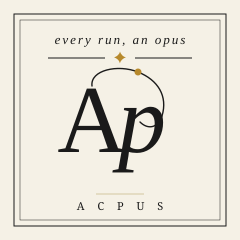

Composable control flow
Parallel, fanout, if, switch, loop, and guard blocks compose into one inspectable workflow graph.

Every run is an opus.
A local durable workflow engine for AI agents. Define specs in YAML, conduct Runs that survive crashes, and control every node from the terminal.
Capabilities
Three execution primitives compose with control flow into structured, pauseable, replayable Runs: local by default, durable by design.
Parallel, fanout, if, switch, loop, and guard blocks compose into one inspectable workflow graph.
Every Run captures inputs, compiled IR, and agent definitions so node state and artifacts survive restarts.
Pause, resume, retry failed nodes, replay finished Runs, or fork from prior work with CLI commands.
Prompt ACP-compatible agents such as Codex, Claude, Pi, OpenCode, and capture structured output.
Suspend a Run until a JSON payload arrives from a person or an agent steering the workflow.
Discover, inspect, lint, and run catalog playbooks by reference before adapting them for your task.
Quick start
Install the CLI, lint a Workflow Spec, submit a durable local Run, and open the terminal visualizer.
$ npm install -g acpus $ acpus workflows lint review.workflow.yaml $ acpus workflows run review.workflow.yaml --input '{"topic":"release readiness"}' $ acpus runs visualize
# review.workflow.yaml
name: quick-review
version: 1
description: quick review with multi agents
input:
topic: string
agents:
codex:
use: codex
claude:
use: claude
opencode:
use: opencode
workflow:
steps:
- id: reviews
join: all
parallel:
- id: codex
do:
- id: codex_review
run: agent
use: codex
prompt: |
Review for correctness and maintainability:
${{ input.topic }}
output:
risks: string
ready: boolean
- id: claude
do:
- id: claude_review
run: agent
use: claude
prompt: |
Review for product risk and edge cases:
${{ input.topic }}
output:
risks: string
ready: boolean
- id: opencode
do:
- id: opencode_review
run: agent
use: opencode
prompt: |
Review for implementation gaps:
${{ input.topic }}
output:
risks: string
ready: boolean
- id: synthesize
run: agent
use: codex
prompt: |
Synthesize these parallel reviews into a release call:
${{ json(steps.reviews.output) }}
output:
summary: string
issue_count: integer
ready: boolean
outputs:
summary: ${{ steps.synthesize.output.summary }}
issue_count: ${{ steps.synthesize.output.issue_count }}
ready: ${{ steps.synthesize.output.ready }}
Primitives
Every workflow step is an Agent, Program, or Signal. Composites and guards orchestrate them into larger durable workflows.
Use it with your agent
Your orchestrating agent can author Workflow Specs, run Acpus commands, and coordinate any worker agent supported by acpx through local Runs.
$ npx skills add kelvinschen/acpus --skill acpus
Claude, Codex, Pi, Trae, or another skills-capable agent can use the Acpus skill to write and run workflows.
Any acpx-supported agent can be selected inside the Workflow Spec and executed as an Agent Step.
Catalog
Playbooks are runnable starting points. Your agent can inspect them, adapt the pattern, and extend it into task-specific workflows.
Decompose a goal into a frozen requirement checklist, then loop build-audit until every requirement is verified.
Fan out independent research agents and synthesize a final report.
Run competing implementations in isolated worktrees and apply the winner.
Iterate agent repair attempts until verification passes, then apply the passing patch.
Explore all workflow specs with interactive digraphs in the Workflow Visualize.
Get started
Install the CLI, add the skill to your agent, and run a workflow from the terminal.